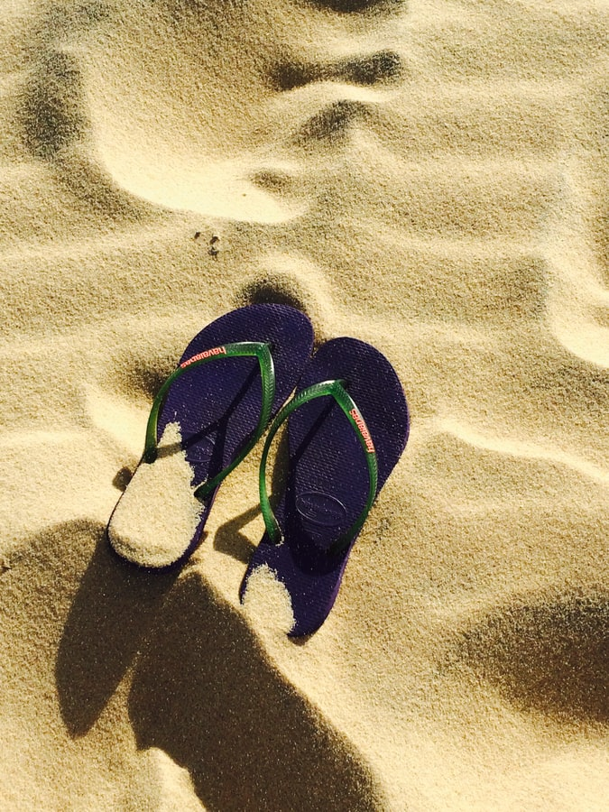
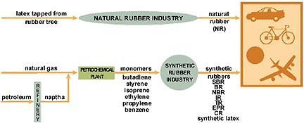
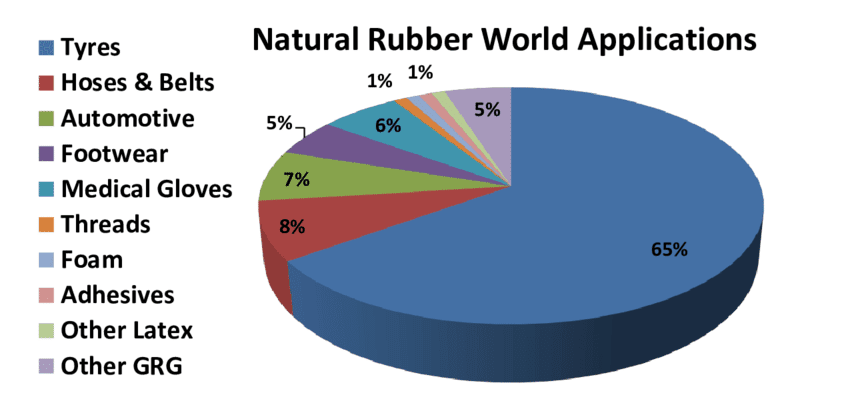
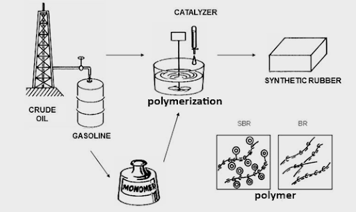
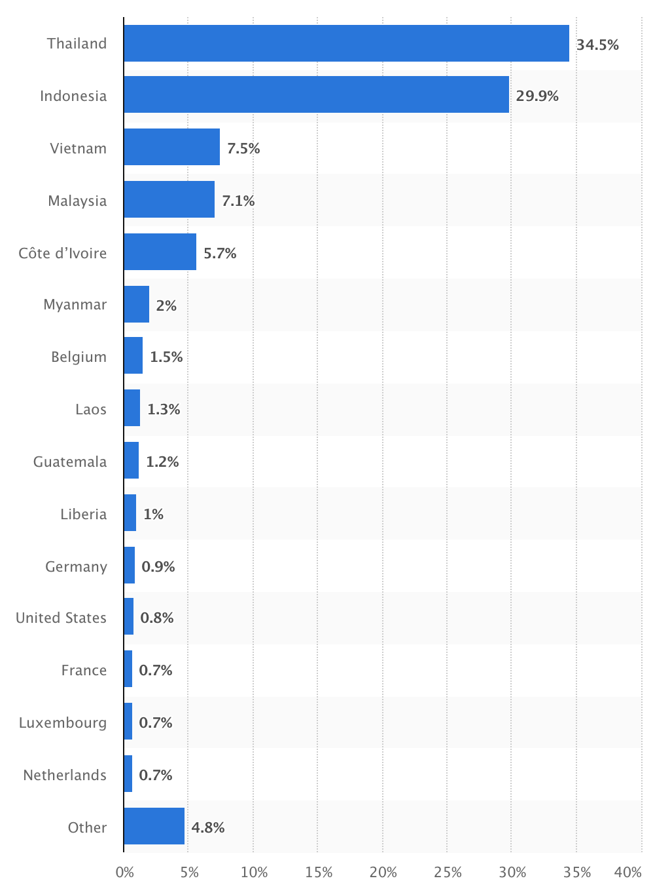
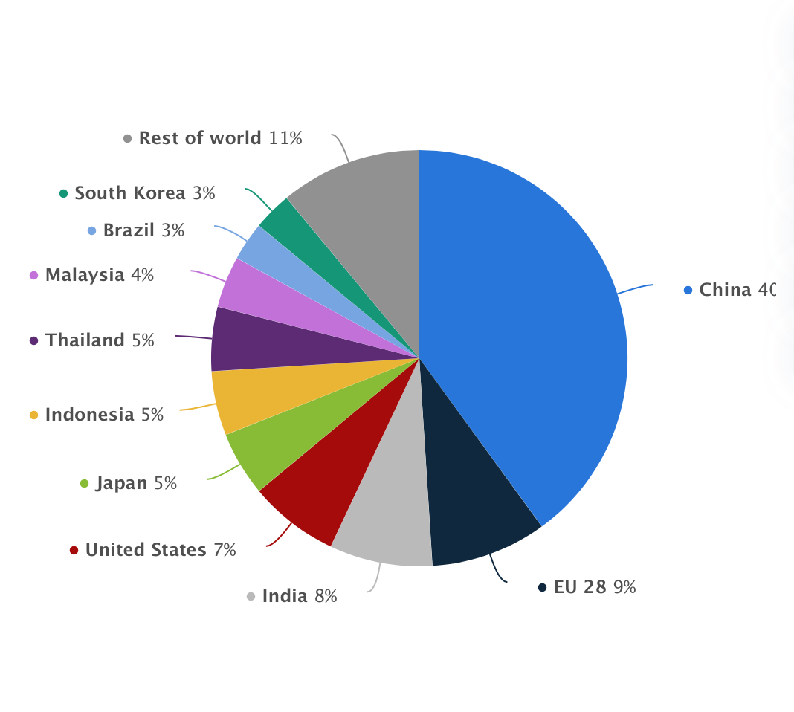

Definition

Rubber is “a tough elastic polymeric substance made from the latex of a tropical plant or synthetically.” (via Oxford Dictionary)
There are two types of rubber:
- Natural Rubber: Natural rubber is derived from trees, specifically rubber trees, through a process called “tapping.” During this process, “the collector makes a thin, diagonal cut to remove a sliver of bark. The milky-white latex fluid runs out of the bark...The fluid runs down the cut and is collected in a bucket...The tree can be tapped again with another fresh cut, usually the next day.” This process does not harm the trees.
- Synthetic Rubber: Synthetic rubber is a result of polymerization (linking) of molecules. The process begins with either crude oil/petroleum or natural gas, goes through the polymerization process, and ends up as synthetic rubber.
Supply Chain Overview

What is natural rubber used for?

- Tires (65%), Hoses & Belts (8%), Automotive (7%), Medical Gloves (6%), Footwear (5%)
- Only 5% is used for footwear while a majority is used for tires & automotive needs
What is natural rubber used for in the footwear industry?
- Rubber soles
## Outdoor/Athletic shoes ## PPE
- Wellington/rubber boots
- Flip flops/sandals
What are the major issues of the natural rubber industry?
- Deforestation
## Loss of tropical forests/forest cover ## Loss of biodiversity
- Deterioration of eco-systems
## Monoculture plantations ## Pesticide use ## Illegal deforestation & hunting of wildlife
- Human Rights Violations
## Plantations ### Farmer health (inadequate breaks) ### Unfair wages
- Disease outbreak
## Fungal disease spreading through plantations
- Demand
## Other rubber options available
Synthetic Rubber

Is synthetic rubber a sustainable alternative option for natural rubber?
The simple answer is: NO. Synthetic Rubber has it’s own set of (arguable worse) issues. Crude oil extraction, needed for synthetic rubber, causes environmental problems such as oil spills, pollution of toxic chemicals, deforestation, and destruction of biodiversity. It can also cause chronic health issues to those living near extraction sites, creating social sustainability issues as well. Not to mention, the health of the workers and potential human rights issues on extraction sites.
Recent & Relevant News
Legal Issues & Major Controversies
Mapping the Supply Chain
Click here to see Natural Rubber Supply Chain map: https://prezi.com/0hoxlbtu9vry/natural-rubber-supply-chain/?utm_campaign=share&utm_medium=copy
Who Produces Natural Rubber?
Asia is the largest hub for natural rubber production in the world (90 percent of the total global production).
Thailand and Indonesia are the leaders in this industry. Together they compromise over 64% of global rubber production with Thailand at 34.5% and Indonesia at 29.9%. The third leading global rubber producer is Vietnam at 7.5%.

Once Produced, who do they export to?
China is by far the biggest consumer of natural rubber. This has to do a lot with China’s contribution to the automotive industry. Majority of
exports go to: China (40%), EU 28 (9%), India (8%), USA (7%)

Supplier Engagement Model
Below covers the supplier engagement model for Harvesting, Processing, and Logistics for rubber.
Harvesting Model
Industrial plantation and smallholders, tapping, traders and transport
First step:
- Country specific laws: Restoration and conservation of natural forests
- ILO: Eight fundamental conventions
- FSC forest management: conserve biological diversity and its associated values, water resources, soils, ecosystems and landscapes
- OHSAS 18001/ISO 45001 (health & safe management)
- Sustainable Natural Rubber Initiative (SNR-i): voluntary
Second step:
- Sampling and analysis: conducted by a certified third-party laboratory two times per calendar year
- Regular audits: Energy and water consumption, waste production, and CO2 emissions constantly reviewed
- HCV audits: Areas of High Conservation Value (HCV) audited by the HCV Resource Network
- HCS audits: Areas of High Carbon Stock (HCS) audited by the HCS Approach Steering Group
- FSC: Compliance with laws and FSC Principles
Third step:
- Corrective actions: Suppliers that are declared not in compliance under Code of Conduct mentioned in the first two steps will be immediately placed on a corrective action plan and the facility will have two months to become complaint with the policy.
- Consultancy: Have consultation with Canopy, Rainforest Alliance and Stand.Earth to develop a Forest Derived Materials (FDM) Policy that covers the sustainable and responsible sourcing of rubber in supply chain
Fourth step:
- Country specific reporting
** ILO reporting ** OHSAS/ISO reporting ** Ministry of Agriculture
- International Rubber Study Group
** Inter-governmental organization ** Sustainable Natural Rubber Initiative (SNR-i) reporting
- Global Platform for Sustainable Natural Rubber
** International, multistakeholder, voluntary membership organisation, with a mission to lead improvements in the socioeconomic and environmental performance of the natural rubber value chain
- World Rubber Summit
Processing Model
- Natural rubber processing, Plants processing in general (shredding, washing, dying), Block rubber, Quality check, Product shipment and transport
First step:
- Energy: Renewable energy use and LED lighting systems in the branches and facilities
- ILO: Eight conventions
- Energy-saving: equipment and system
- Technological research: on raw and accessory materials as well as alternative substances with a lower environmental impact
- Waste Reduction: recycle and reuse of the company’s main products and post-consumption materials
- OHSAS 18001 / ISO 45001 (health & safe management)
- ISO:
** 9001 (quality management system) ** 14001 (environmental management system and internal management regulations) ** 2000 (Guidelines for the specification of technically specified rubber (TSR))
Second step:
- Wastewater sampling and analysis conducted by a certified third-party laboratory two times per calendar year
- Energy and water consumption, waste production, and CO2 emissions constantly reviewed by regular audits
Third step:
- Corrective actions: Suppliers that are declared not in compliance under Code of Conduct mentioned in the first two steps will be immediately placed on a corrective action plan and the facility will have two months to become complaint with the policy.
- Training: Provides online and facilitator-led training on Code of Business Conduct and other important topics such as
- anti-corruption, conflicts of interest, fair competition and intellectual property. Every associate have to complete assigned online code of conduct training
- Consultancy: Work with BSR to develop a water usage and waste water discharge standard
Fourth step:
- Country specific reporting
** ILO reporting ** OHSAH reporting ** ISO reporting
- International Rubber Study Group
** Inter-governmental organization ** Sustainable Natural Rubber Initiative (SNR-i) reporting
- Global Platform for Sustainable Natural Rubber
** International, multistakeholder, voluntary membership organisation, with a mission to lead improvements in the socioeconomic and environmental performance of the natural rubber value chain
- World Rubber Summit
Logistics Model
Transport, rubber product manufacturers. Product transport, automakers, other rubber users
First step:
- ILO: Eight fundamental conventions
- Energy-saving: equipment and systems
- OHSAS 18001 / ISO 45001 (health & safe management)
- ISO:
** 9001 (quality management system) ** 14001 (environmental management system and internal management regulations)
- Sustainable supply chain: strong engagement plan with suppliers, subcontractors, clients and final customers
- Sustainable Natural Rubber Initiative (SNR-i): voluntary
Second step:
- Audits two times per calendar year to verify: Compliance with laws, regulations, fair dealing, antitrust laws, anti-corruption, anti-money laundering, export and import regulations, tax compliance
Third step:
- Corrective actions: Suppliers that are declared not in compliance under Code of Conduct mentioned in the first two steps will be immediately placed on a corrective action plan and the facility will have two months to become compliant with the policy.
- Training: Provides online and facilitator-led training on Code of Business Conduct and other important topics such as anti-corruption, conflicts of interest, fair competition and intellectual property. Every associate have to complete assigned online code of conduct training
Fourth step:
- Country specific reporting
** ILO reporting ** OHSAS/ISO reporting ** Ministry of Commerce ** Ministry of Trade
- International Rubber Study Group
** Inter-governmental organization
- Global Platform for Sustainable Natural Rubber
** International, multistakeholder, voluntary membership organisation, with a mission to lead improvements in the socioeconomic and environmental performance of the natural rubber value chain
- World Rubber Summit
Governance
Benchmarks
See full benchmarking table here: https://docs.google.com/spreadsheets/d/14DjfVqovbRBPLU07dlI0SimRZsKlhWwP/edit#gid=1986033603
Top 5 Natural Rubber Producing Companies:
With plantations in Indonesia and Thailand, Sri Trang Agro-Industry is the biggest rubber producer globally. Thai Rubber Latex Co., Thai Hua Rubber Public, Von Bundit Co., and Southland Rubber are also major leaders--all of which have several plantations in Thailand.
- Sri Trang Agro-Industry
- Thai Rubber Latex Corporation (Thailand) Public Co., Ltd. (TRUBB)
- Thai Hua Rubber Public
- Von Bundit Co., Ltd.
- Southland Rubber
Companies in rubber footwear:
Vibram: Rubber soles manufacturer (Italy)
- made from a minimum of 30% recycled rubber
- use of renewable energy and LED lighting systems
- no waste project: recycle and reuse of the main products and post-consumption materials
- engagement plan with suppliers, subcontractors, clients
- technological research on raw materials and alternative substances with a lower environmental impact
- committed to climate actions, sustainable cities and communities, responsible consumption, and production
Wolverine: footwear manufacturer (US)
- manufacturing processes to minimize the adverse effects on the community and natural resources
- production partners: constant communication about best practices and current events impacting the industry
- Wolverine Worldwide Foundations: supports charitable organizations
- recognized for their low environmental impact
- LEED Gold certified: regional headquarters
- ensure compliance with code of conduct by production partners
Pou Chen Group: footwear manufacturer (Taiwan)
- Environmental Management System: local environmental protection requirements, suppliers
- Energy Monitoring System: energy saving and carbon reduction
- Climate Change Risk: sustainable production model
- Labor: accordance with the standards of Fair Labor Association
- Sustainable Development Department: examines and reviews the effectiveness of CSR
- rewards suppliers with outstanding performance
VR Corp: Apparel and footwear manufacturer (US)
- Sustainable building and office designs
- Use of solar, thermal, or other renewable energy
- Circular Business Models: better products design to maximize their life span, including packaging reduction or elimination initiatives
- Goal by 2050: improve the lives of 2 million workers and their communities by 2025
- partnership with a global consultancy (the Carbon Trust): model data across facilities and operations
Monitoring
Verification
Reporting
Sustainable Natural Rubber Initiative
- Support Improvement of Productivity
- Enhance Natural Rubber quality
- Support forest sustainability
- Water management
- Respect Human & Labour Rights
International Rubber Study Group
- Created Sustainable Natural Rubber Initiative & collects data from it
Global Platform for Sustainable Natural Rubber
- Leads improvements in the socioeconomic and environmental performance of the natural rubber value chain
World Rubber Summit
- Annual summit to discuss challenges & solutions
Life Cycle Assessments
Rubber footwear lifecycle:
- Step 1: Create Plantation
- Step 2: Harvesting Latex
- Step 3: Rubber Production
- Step 4: Rubber Transportation
- Step 5: Rubber Manufacture
- Step 6: Rubber Transportation
- Step 7: Customer use
- Step 8: Recycling
- Step 9: End of life
Other Challenges & Impacts
- Water impact: Rubber Production involves heavy water consumption due the washing process and watering/maintaining the rubber trees.
- Air: Rubber Production results in air pollution because of the drying process, machinery usage and all the transportation involved will also result in air pollution.
- Waste: Rubber clipping, trimming, and package will result in material waste. During transportation of rubber, there’s also Oil spills and spread of invasive species involved.
- Energy: Almost every step of rubber flip flop producing involves energy consumption, such as man-power or plantation, electricity for machines and lighting, fossil fuels for machinery and marine fuel for shipping.
Innovations
A company called “Indosole” recycles waste tires and sells shoes that are crafted by artisans in Indonesia featuring repurposed and natural materials. Indosole is a certified B Corporation — one of over 1,000 companies using business as a force for good.